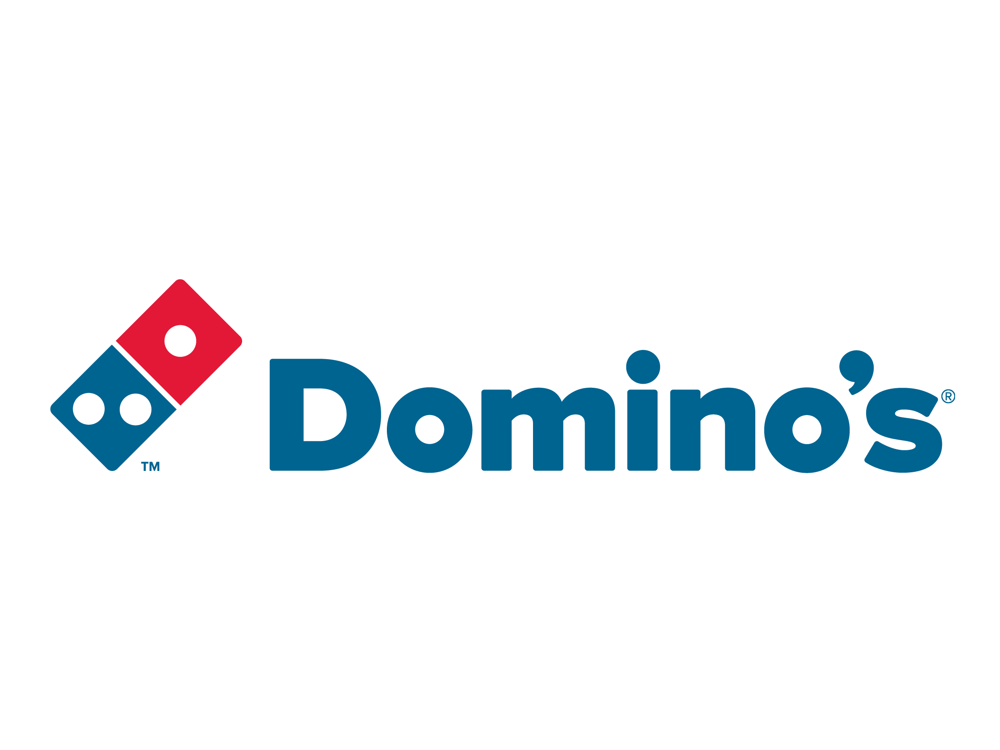
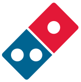

홈 > 브랜드 매거진 > 도미노피자
도미노피자
도미노피자(Domino's Pizza)는 1960년 미국에서 시작된 글로벌 피자 배달·테이크아웃 프랜차이즈이다.
산업 분야 식음료 · 공개 등급 자료 기반 · 브랜드 평가 4.3 ★


한눈에 보는 브랜드
도미노피자는 1960년 톰 모너핸(Tom Monaghan)이 동생 짐과 함께 미국 미시간주 입실란티의 작은 피자가게 '도미닉스(DomiNick's)'를 인수하며 시작된 배달 중심 피자 브랜드다. 1965년 현재의 이름으로 바꾼 뒤 매장 내 식사보다 빠른 배달과 프랜차이즈 확장에 집중했다.
현재 전 세계 90개 이상 시장에서 2만 1천여 개 매장을 운영하는 글로벌 피자 체인으로, 미국 증시(티커 DPZ)에 상장돼 있으며 분기 매출이 10억 달러대에 이른다.
브랜드 관점
도미노피자를 이해하려면 가장 먼저 경쟁 구도를 봐야 한다. 피자헛이 매장 외식과 메뉴 다양성, 파파존스가 재료 품질을 내세우는 사이, 도미노피자는 '빠르고 정확한 배달'과 '주문 경험'을 핵심 차별점으로 잡았다.
1979년 도입한 '30분 배달 보증'은 브랜드를 각인시켰지만, 1990년대 배달원 안전사고와 거액 소송(7천8백만 달러 평결 사례)으로 1993년 폐지됐다. 이 경험은 속도 약속의 한계를 보여줬고, 이후 회사는 디지털 주문으로 방향을 틀었다.
2008년 주문 추적 시스템, 자체 운영체제 DomOS, 머신러닝 기반 도착시간 예측, 마이크로소프트와의 인공지능 협업까지 이어지며 스스로를 '피자를 파는 기술 회사'로 규정한다. 한국에서는 1990년 진출 이후 별도 법인이 본사에 로열티를 내는 구조로 운영된다.
시작과 성장
1960년 톰 모너핸과 짐 모너핸 형제는 5백 달러 계약금과 9백 달러 대출로 미시간주 입실란티의 도미닉스를 인수했다. 이듬해 짐은 자기 지분을 폭스바겐 비틀 한 대와 맞바꿔 사업에서 빠졌고, 톰이 단독으로 운영을 맡았다.
원 소유주가 도미닉스 상호 사용을 막자 1965년 '도미노피자'로 개명했고, 당시 매장 세 곳을 뜻하는 점 세 개를 로고에 담았다. 1967년 첫 프랜차이즈 매장을 열고 배달 전문 모델로 빠르게 확장해 1978년 2백 개 매장에 이르렀다.
1998년 모너핸은 경영권 대부분을 사모펀드 베인캐피털에 넘겼고, 2004년 회사는 뉴욕증권거래소에 상장하며 전문 경영 체제로 전환했다.
브랜드 아이덴티티
도미노피자의 정체성은 '편리함과 속도'라는 약속에 뿌리를 둔다. 상징은 도미노 패를 형상화한 로고로, 빨강과 파랑 두 색 위에 흰 점 세 개가 배치된다.
점 세 개는 1965년 당시 세 개 매장을 의미하며, 빨강은 토마토소스를, 파랑과 빨강 조합은 미국 국기를 연상시켜 친근함과 신뢰를 노린 선택이었다. 색상은 빨강과 파랑을 기본으로 쓴다.
주요 타깃은 빠른 한 끼와 간편한 주문을 원하는 가족·청년층이며, 보이스는 군더더기 없이 실용적이고 위트 있는 어조를 지향한다.
제품과 서비스
핵심 품목은 배달과 포장에 최적화된 피자이며, 치킨·사이드 디시·디저트·음료가 곁들여진다. 토핑과 도우를 고르는 맞춤형 주문과 세트·할인 묶음이 가격 전략의 중심이다.
가격대는 단품 피자부터 가족 단위 세트까지 폭넓게 구성된다. 판매 채널은 매장 픽업과 배달 양쪽을 아우르되, 자체 앱과 웹사이트 등 온라인 주문 비중이 매우 높은 디지털 우선 구조로 운영된다.
사람들
창업자: 톰·짐 모너핸 형제(Tom & James Monaghan)가 1960년 시작했다. 소유: 독립 상장사(NYSE: DPZ, 2004년 상장).
현재 상태
본사는 미국 미시간주 앤아버에 있다. 최고경영자는 2022년 5월 취임한 러셀 와이너(Russell Weiner)이며, 2026년 10월부로 조 조던(Joe Jordan)이 뒤를 잇는 승계 계획이 공시됐다.
매장은 전 세계 90개 이상 시장에서 2만 1천여 개에 이르고, 미국 내 약 7천 곳과 해외 1만 4천여 곳으로 나뉜다. 분기 매출은 10억 달러대 규모이며, 한국을 비롯한 다수 시장은 현지 법인·마스터프랜차이즈 형태로 운영된다.
국가별 세부 가맹 조건과 일부 재무 항목은 미공개로 둔다.
타임라인
BI/CI 변천사

BI/CI 아카이브대표 브랜드 마크함께 읽을 브랜드
 식음료 · 자료 기반피자헛
식음료 · 자료 기반피자헛피자헛(Pizza Hut)은 1958년 미국 캔자스에서 창립된 세계 최대 규모의 피자 프랜차이즈 브랜드이다.
 식음료 · 자료 기반써브웨이
식음료 · 자료 기반써브웨이써브웨이(Subway)는 1965년 미국에서 시작된 서브마린 샌드위치 프랜차이즈이다.
 식음료 · 자료 기반컴포즈커피
식음료 · 자료 기반컴포즈커피컴포즈커피(Compose Coffee)는 2014년 부산에서 시작된 한국의 저가 커피 프랜차이즈로, 2024년 필리핀 졸리비그룹이 지분을 인수했다.
맥도날드는 가장 평범한 소비재를 세계 어디서나 읽히는 대중문화의 기호로 바꾼 브랜드다. 햄버거와 감자튀김은 단순한 메뉴지만, 맥도날드는 속도, 표준화, 접근성, 익숙...
BI
비비고
식음료 · 자료 기반비비고비비고(bibigo)는 CJ제일제당이 2010년 출시한 글로벌 한식 브랜드로, 만두·김치·즉석밥·한식 소스 등 100여 종의 한국 식품을 약 70개국에서 판매한다.
 식음료 · 자료 기반뚜레쥬르
식음료 · 자료 기반뚜레쥬르뚜레쥬르(Tous les Jours)는 CJ푸드빌이 운영하는 대한민국의 베이커리 프랜차이즈다. 1997년 1호점을 열었으며 '매일매일'을 뜻하는 프랑스어 이름처럼 갓...
 식음료 · 자료 기반메가MGC커피
식음료 · 자료 기반메가MGC커피메가MGC커피(Mega MGC Coffee)는 2015년 시작된 한국의 저가 대용량 커피 프랜차이즈다.
 식음료 · 자료 기반공차
식음료 · 자료 기반공차공차(Gong Cha)는 대만에서 시작된 버블티 브랜드의 한국 사업을 운영하는 공차코리아의 브랜드다.